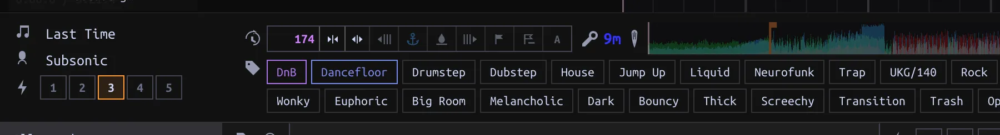
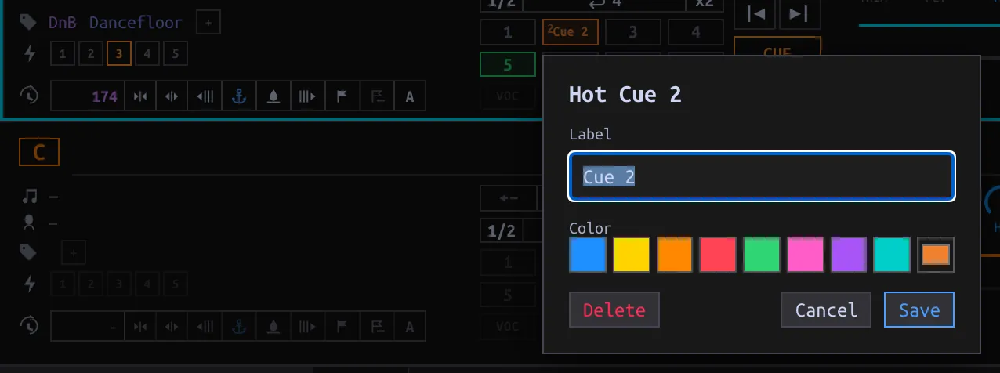

Analyze Tracks and set cues
Inspect background analysis, correct Beatgrid and Key, and place Main and Hot Cues.
On this page
What runs on import
Adding a Track queues its waveform and missing Beatgrid/Key work. TASKS → Background tasks shows pending, running, completed and failed jobs; use Retry on a failed task. Open Unprocessed to curate Tags/Energy and Needs attention to find a Track whose grid analysis bailed without saving a grid. Those are different lists. A failed grid fit can show an ! with diagnostics in the loaded Track panel. Automatic analysis preserves imported or manually edited grids, and imported/manual Keys; a bail with diagnostics is not silently retried on every startup.
Re-analyze deliberately
- Load the Track onto a Deck; check its current BPM, grid and Key. Select A in its tempo/Beatgrid controls (also available in Performance). While a task is already pending or running, Analyze is disabled or deduplicated.
- Watch TASKS and wait for completion; inspect the grid against the waveform and the resulting Key. A successful manual Analyze overwrites even an imported or hand-edited grid and an imported/manual Key when detection succeeds. It is not a preview. If the grid fit bails, existing grid/BPM stay; if no Key is detected, existing Key stays.
- If detection is off, use the Deck’s grid controls: Nudge grid earlier/later to align the marks, Set downbeat at playhead for the bar origin, or Anchor drop at playhead to align grid and cue ladder. Check several phrases, not only one transient. A BPM edit changes the projected tempo; consult Sync before replacing an external grid.

The A at the right end of the tempo/grid cluster queues Analyze; the adjacent buttons adjust the saved grid. The anchor icons mark downbeat and drop. These controls write to the loaded Track, not a selected row.
Main cue and Hot Cues
The Main cue is the Deck’s single Cue point and is distinct from eight numbered Hot Cues. Set the Main cue at the desired playhead position with the Cue controls; the saved position belongs to the Track. To place a Hot Cue, move the playhead and press an empty numbered pad. With Quantize on and an available Beatgrid, placement snaps to the nearest beat. Pressing a filled pad triggers/jumps to that cue instead of creating another. Shift-click a pad to remove it; right-click a filled pad to edit its label and color, then Save (or Cancel without a change). While paused, Previous/Next Hot Cue steps through cues and moves the Deck Cue as well.

If you anchor a drop, inspect any existing cues before changing the ladder. The convention often puts Hot Cue 4 at the drop, with 3/2/1 progressively earlier; it is a curation convention, not a requirement for every Track. Cue mode in first run determines how a paused Deck responds when a Hot Cue is held; it does not alter saved cue positions.